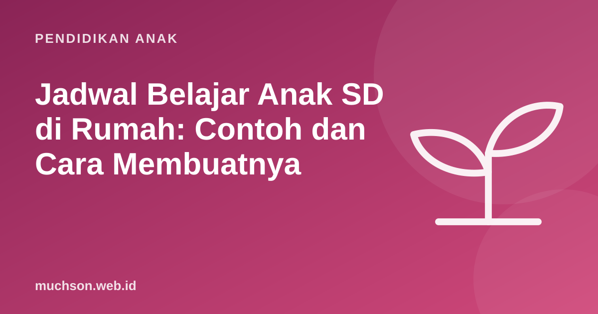

Beranda › Artikel › Pendidikan Anak
Pendidikan AnakJadwal Belajar Anak SD di Rumah: Contoh dan Cara Membuatnya
Jadwal belajar yang baik membuat sore hari lebih tenang: anak tahu kapan belajar, kapan bermain, dan orang tua tidak perlu terus-menerus mengingatkan. Kuncinya bukan jadwal yang padat, melainkan jadwal yang realistis, konsisten, dan menyisakan ruang untuk istirahat.

Prinsip jadwal yang berhasil
- Pendek dan rutin lebih baik dari panjang dan jarang. Riset tentang belajar berjarak (spacing) menunjukkan latihan yang dibagi ke beberapa hari menghasilkan ingatan lebih tahan lama.
- Waktu yang sama setiap hari. Rutinitas mengurangi tawar-menawar.
- Setelah istirahat, bukan langsung pulang sekolah. Anak butuh makan, mandi, dan bermain sebentar.
- Tidur tidak dikorbankan. Anak 6-12 tahun dianjurkan tidur 9-12 jam.
- Libatkan anak menyusunnya. Jadwal yang ikut dibuat anak lebih dipatuhi.
Berapa lama belajar di rumah?
Tidak ada aturan baku, dan kebutuhan setiap anak berbeda. Patokan umum yang dipakai banyak sekolah adalah sekitar 10 menit per jenjang kelas untuk pekerjaan rumah (kelas 1 sekitar 10 menit, kelas 6 sekitar 60 menit). Tinjauan penelitian Cooper dan rekan (2006) juga menemukan hubungan PR dengan prestasi lebih lemah di SD dibanding SMP dan SMA, sehingga untuk anak SD, kualitas dan kebiasaan lebih penting daripada durasi panjang.
| Kelas | Belajar terfokus (patokan) | Format |
|---|---|---|
| 1-2 | 10-20 menit | 1 sesi pendek, lebih banyak membaca bersama dan bermain angka |
| 3-4 | 20-40 menit | 2 sesi dengan jeda gerak |
| 5-6 | 40-60 menit | 2-3 sesi dengan jeda |
Angka di atas untuk belajar akademik, tidak termasuk membaca buku untuk kesenangan, bermain, atau hobi seperti coding dan musik.
Contoh jadwal harian anak kelas 4
| Jam | Kegiatan |
|---|---|
| 13.00-14.00 | Pulang, makan siang, istirahat |
| 14.00-15.30 | Bermain bebas atau tidur siang |
| 15.30-16.00 | Mandi dan camilan |
| 16.00-16.20 | Belajar sesi 1: PR atau latihan |
| 16.20-16.30 | Jeda gerak |
| 16.30-16.50 | Belajar sesi 2: mengulang materi atau membaca |
| 16.50-18.00 | Main di luar, hobi, atau kegiatan keluarga |
| 18.00-19.30 | Makan malam, ibadah, waktu keluarga |
| 19.30-20.00 | Persiapan esok hari dan membaca buku |
| 20.00 | Waktu tidur (gawai di luar kamar) |
Jadwal mingguan: variasi kegiatan
| Hari | Akademik | Kegiatan tambahan |
|---|---|---|
| Senin | PR + ulang materi hari ini | Membaca bersama |
| Selasa | PR + latihan perkalian 10 menit | Coding atau proyek kreatif 45 menit |
| Rabu | PR + ulang materi | Olahraga atau ekskul |
| Kamis | PR + latihan menulis | Coding atau proyek kreatif 45 menit |
| Jumat | Ringan: ulang seminggu dengan kuis kecil | Bebas |
| Sabtu | Opsional 20 menit | Ke luar rumah, perpustakaan, bermain |
| Minggu | Persiapan pekan depan 15 menit | Istirahat dan keluarga |
Buat jadwal anak Anda
Ulangi sedikit, tapi sering
Salah satu temuan paling kuat dalam ilmu belajar adalah efek berjarak (spacing effect): mengulang materi beberapa kali dengan jeda beberapa hari jauh lebih efektif daripada belajar banyak sekaligus menjelang ulangan. Praktiknya untuk anak SD: setiap hari sisihkan 5-10 menit untuk mengulang materi kemarin dan minggu lalu dengan pertanyaan singkat, bukan membaca ulang.
Saat jadwal tidak berjalan
Jadwal yang baik juga memberi tempat bagi kegiatan yang anak cintai. Bila anak tertarik pada coding, dua sesi 45 menit per minggu sudah cukup untuk berkembang pesat. Coba pelajaran pertama PixelKode untuk melihat apakah cocok masuk jadwal anak.
Tanya jawab
Berapa lama anak SD sebaiknya belajar di rumah?
Kapan waktu terbaik belajar setelah sekolah?
Apakah anak SD perlu les tambahan?
Bagaimana agar anak konsisten mengikuti jadwal?
Sumber dan bacaan lanjut
- Cooper, H., Robinson, J. C., & Patall, E. A. (2006). Does homework improve academic achievement? Review of Educational Research
- Dunlosky, J. dkk. (2013). Improving students' learning with effective learning techniques
- Paruthi, S. dkk. (2016). Recommended amount of sleep for pediatric populations